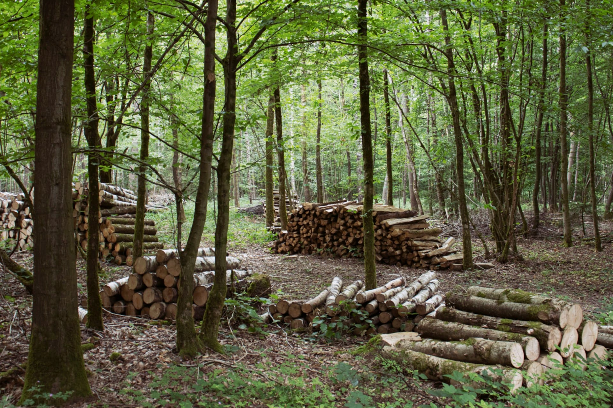
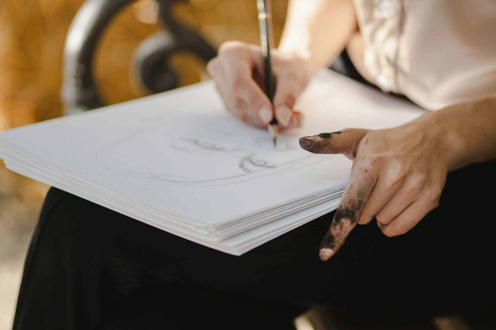

порядок в жизни 
01Как взять всё под контроль?
- Соблюдать распорядок дня: Создание чёткого распорядка помогает поддерживать структуру и избегать чувства беспокойства или бессмысленности. Планируйте день, даже если он состоит из мелких задач.
- Придумывай себе задания: Работы по улучшению жилища или созданию полезных вещей придадут жизни цель и структуру. Например, можно смастерить что-то, построить укрытие или изучить местную флору и фауну.
- Веди календарь: Ведение календаря помогает отслеживать время и не терять ориентацию в днях. Это также даёт ощущение связи с внешним миром и стабильности.
- Не паниковать от каждого шороха: Важно сохранять спокойствие и избегать лишней паники, даже если что-то пугает. Постепенно осознание того, что не каждое событие может быть угрозой, поможет снизить уровень тревоги.

творчество
02Что творить?
- Придумывай истории, вспоминай книги, стихи: Ментальная деятельность помогает отвлечься от негативных мыслей. Придумывайте истории, вспоминайте любимые книги или стихи, что позволяет поддерживать разум в активности и отвлекает от одиночества.
- Разговаривай с самим собой или записывай мысли в дневник: Проговаривание своих мыслей вслух или ведение дневника поможет структурировать переживания и снизит уровень стресса.
- Выражай эмоции для разгрузки: Не держите эмоции в себе! Кричите, смейтесь, пойте — выражение эмоций способствует снижению стресса и помогает лучше контролировать чувства.
- Решай логические задачи: например, шахматные партии "в уме", уравнения, загадки.
- Учись новым навыкам: завязывание узлов, резьба по дереву, рисуй углём на камнях, придумывай песни и др.

общие реккомендации
03Чем заниматься?
- Физическая активность: Занимайтесь физической работой, такой как стройка, исследование территории, заготовка дров. Это не только поможет вам оставаться в форме, но и будет способствовать выработке эндорфинов, что улучшает настроение.
- Соревнования с самими собой: например, установливать собственные рекорды по сбору, постройке, творчеству.
- Делать что угодно, но что-то: Главное — не оставаться бездельником. Если не выполнять какую-то деятельность, мозг начнёт переживать и создавать проблемы. Делайте что-то: работайте, изучайте, планируйте, творите.